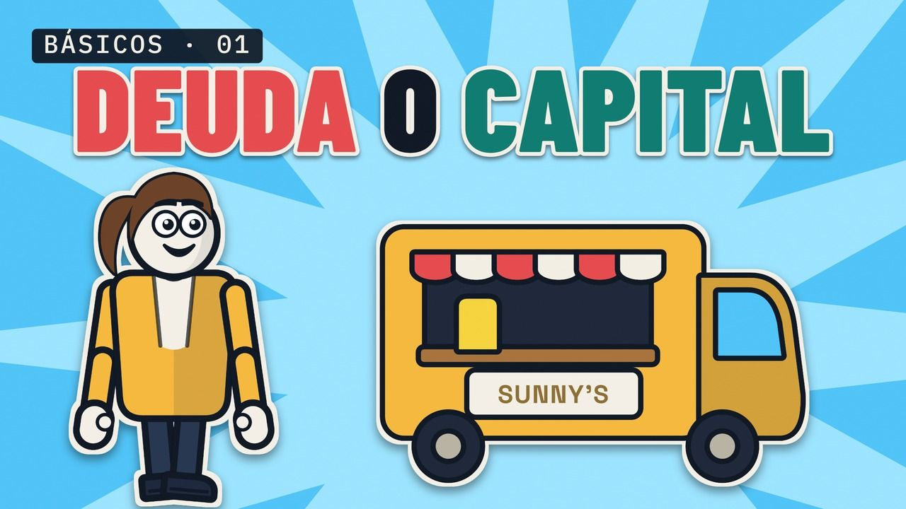
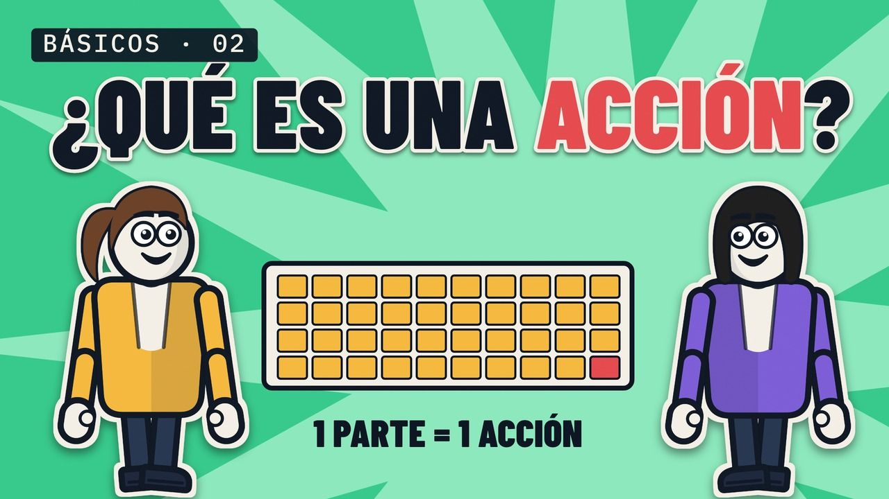
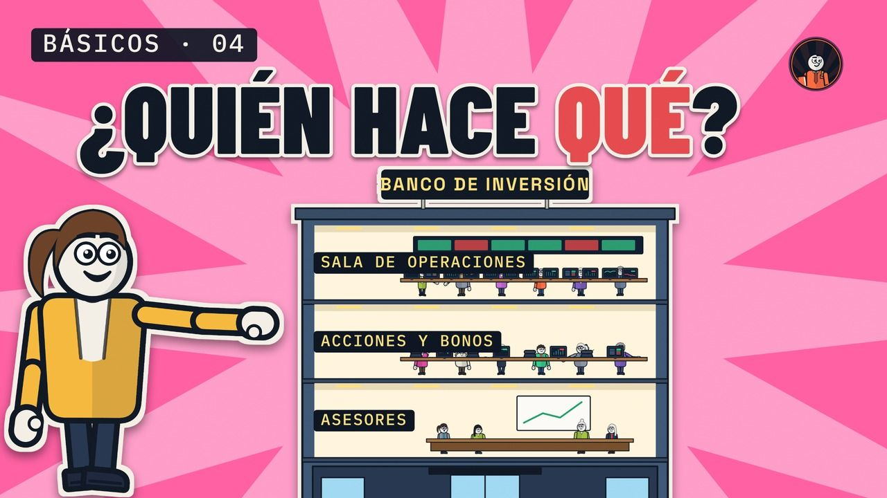

Finanzas desde cero
Lecciones cortas que empiezan desde cero. Cada una explica una idea con el puesto de limonada de Sunny y después la muestra en una operación real.

Lección 1
Deuda o capital, explicado con un puesto de limonada
¿Pedir 10.000 dólares al banco o darle el 40 % a un socio? Cuánto cuesta de verdad cada opción, en un año bueno y en uno malo.

Lección 2
¿Qué es una acción? La bolsa explicada con un puesto de limonada
Sunny divide su negocio en 100 partes iguales. Qué te da una acción y quién decide cuánto vale.
Lección 3 · se estrena el 9 nov
¿Qué es un bono? Préstamos y bonos, explicados con un puesto de limonada
Un préstamo grande, dividido en 100 bonos. Qué recibes al comprar uno y en qué se diferencia de una acción.

Lección 4 · se estrena el 11 nov
¿Qué hace de verdad un banco de inversión? Explicado con un puesto de limonada
Sunny vende un millón de dólares en acciones nuevas. Quién hace qué dentro del banco: asesores, el bookrunner y su libro, la sala de operaciones.
La palabra de nuestro nombre
¿Qué es un bookrunner?
El banco que lleva el libro de órdenes y fija el precio de la operación. Qué hace, cómo funciona el bookbuilding y cuatro operaciones reales en las que fue clave.